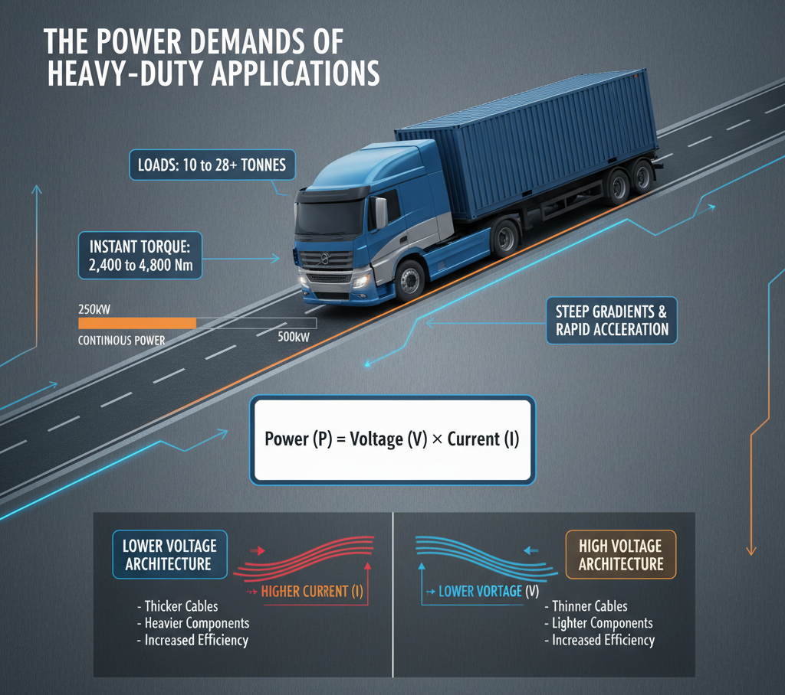
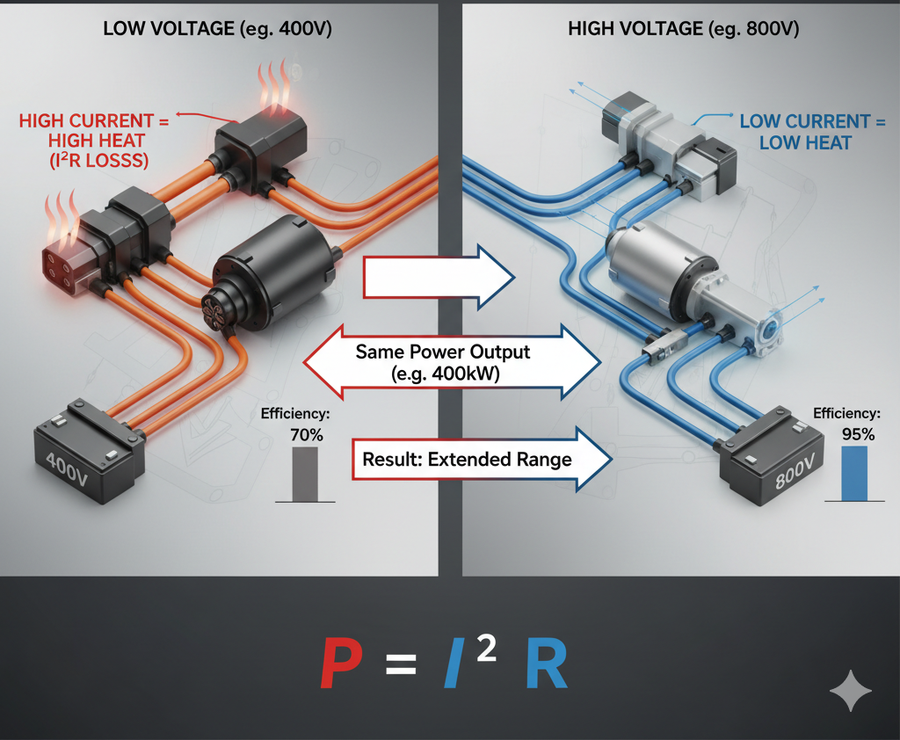
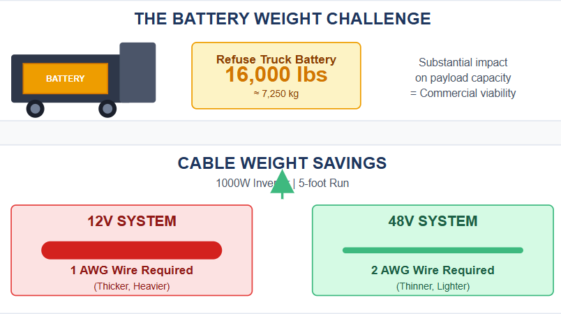
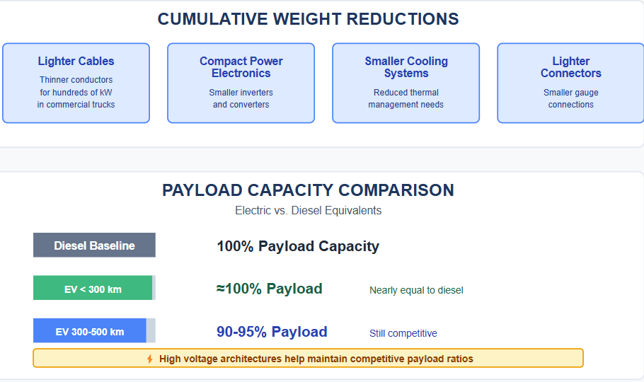
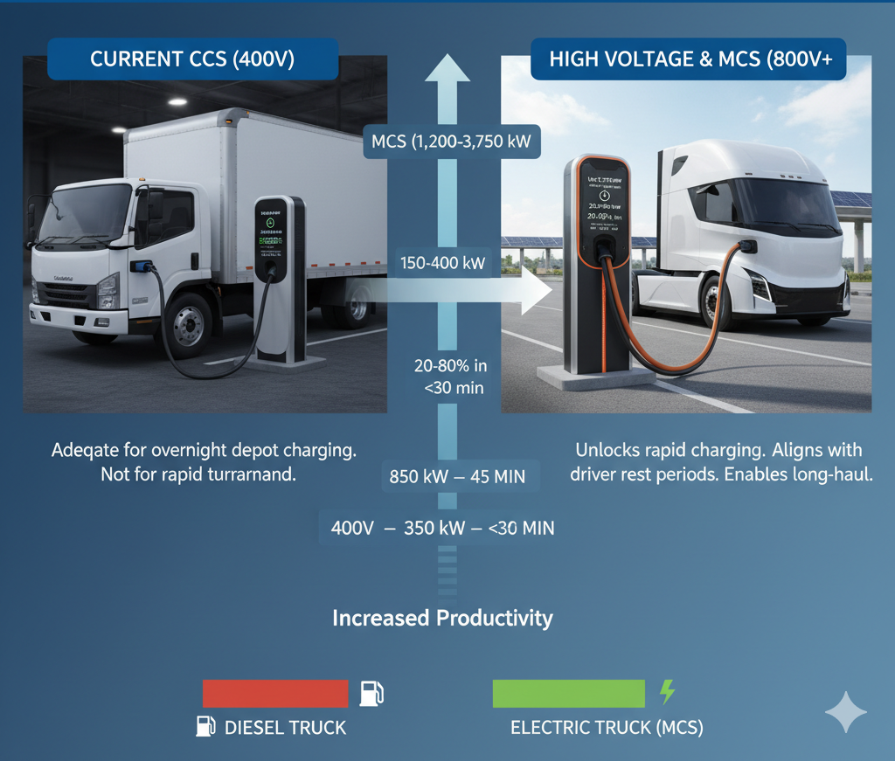
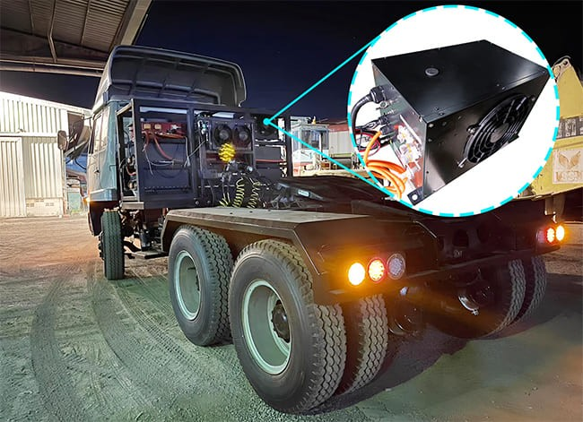
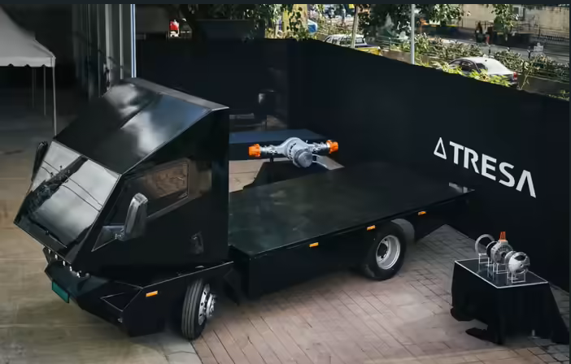
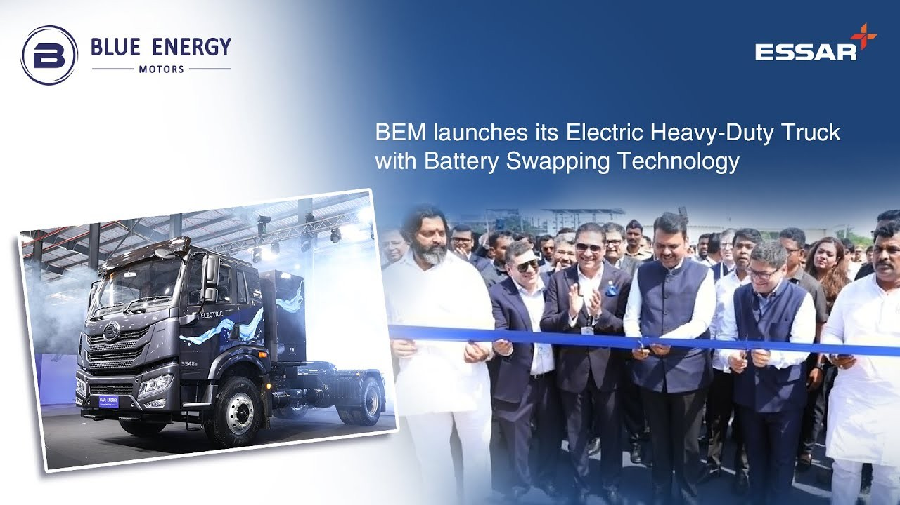
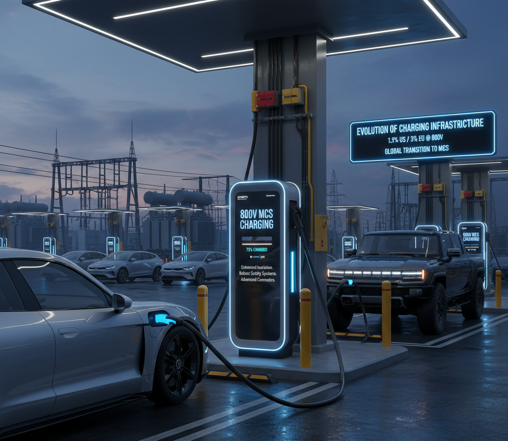

The electrification of commercial vehicles represents one of the most challenging yet critical frontiers in the global transition to sustainable transportation. Unlike passenger cars, electric trucks must haul enormous payloads across long distances while maintaining operational efficiency that matches their diesel counterparts. At the heart of this transformation lies a fundamental technological requirement: high voltage battery packs.
The shift from conventional 400V systems to 800V and even higher voltage architectures is not merely an incremental improvement—it's a necessity driven by the unique power demands and operational constraints of heavy-duty trucking.
The Power Demands of Heavy-Duty Applications
Electric trucks operate in an entirely different performance envelope compared to passenger vehicles. A heavy-duty electric truck requires massive amounts of power to move loads ranging from 10 to 28 tonnes or more. These vehicles must deliver instant torque—often exceeding 2,400 to 4,800 Nm—to handle steep gradients, rapid acceleration from standstill, and sustained high-speed operation on highways.
The fundamental physics governing power delivery is straightforward: Power (P) = Voltage (V) × Current (I). For a given power requirement, the choice becomes critical—either increase voltage or accept higher current. In commercial vehicle applications demanding 250kW to 500kW of continuous power, maintaining lower voltage systems forces proportionally higher current levels through the electrical system. This creates a cascade of engineering challenges that high voltage architectures elegantly solve.

Reducing Current: The Key to Efficiency
The primary advantage of high voltage packs lies in their ability to reduce current for the same power output. This relationship has profound implications across the entire vehicle electrical system. When current flows through any conductor—whether cables, connectors, or motor windings—it encounters resistance that dissipates energy as heat according to the formula P = I²R (resistive or copper losses).
The exponential relationship between current and heat generation is crucial. Doubling the current quadruples the resistive losses. Conversely, doubling the voltage while maintaining the same power output halves the current, reducing resistive losses by 75%. For electric trucks operating at high power levels for extended periods, these efficiency gains directly translate to extended range—a critical factor when battery capacity already adds significant weight to the vehicle.
High-voltage motors demonstrate this advantage clearly. A typical 400kW electric truck motor operating at 520V can achieve efficiencies exceeding 97%, far surpassing the 40-50% efficiency of diesel engines. This efficiency advantage stems largely from reduced I²R losses enabled by higher operating voltages.

Weight and Packaging Advantages
Battery weight represents a significant challenge in electric truck design. A typical heavy-duty truck battery system weighing multiple tonnes can reduce payload capacity—the very metric that determines commercial viability. The National Waste & Recycling Association notes that lithium-ion batteries for refuse trucks can weigh up to 16,000 pounds, substantially impacting load capacity.
High voltage architectures mitigate this challenge by enabling lighter electrical infrastructure. Lower current requirements mean thinner cables can safely carry the necessary power. For a 12V system powering a 1000W inverter, 1 AWG copper wire is required for a 5-foot run. A 48V system with the same power needs only 2 AWG wire—a significant weight savings. When scaled to the hundreds of kilowatts required by commercial trucks, these savings become substantial.

Beyond cable weight, high voltage systems enable more compact power electronics, smaller cooling systems, and lighter connectors. The cumulative effect preserves precious payload capacity. Studies show that electric trucks with ranges under 300 km can achieve payloads nearly equal to diesel equivalents, dropping to approximately 90-95% for ranges between 300-500 km. High voltage architectures help maintain these competitive payload ratios by minimizing the weight penalty of electrification.

Fast Charging: Critical for Commercial Operations
Charging speed represents perhaps the most operationally critical advantage of high voltage systems. Time is money in commercial transport, and charging downtime directly impacts fleet productivity. Current Combined Charging System (CCS) infrastructure typically delivers 150-400 kW at 400V. While adequate for overnight depot charging, this power level cannot support the rapid turnaround times required for intensive commercial operations.
High voltage architectures unlock dramatically faster charging capabilities. An 800V system can accept up to 350 kW from compatible fast chargers, potentially charging from 20% to 80% in approximately 45 minutes—aligning perfectly with mandatory driver rest periods. The charging speed advantage stems from being able to accept higher power without proportionally increasing current to dangerous levels that would require massive, liquid-cooled cables.
The emerging Megawatt Charging System (MCS) standard takes this further, designed specifically for heavy-duty vehicles. MCS delivers up to 1,200-3,750 kW at voltages exceeding 1,000V and currents up to 3,000 amps. This enables charging a large battery pack from 20% to 80% in under 30 minutes—making electric long-haul trucking practically viable for the first time. Without high voltage architectures capable of accepting megawatt-level charging, the operational gap between electric and diesel trucks would remain insurmountable for many applications.

Thermal Management and Safety
High voltage systems also facilitate superior thermal management—critical for battery longevity and safety. Lower current generation reduces heat buildup in conductors, connectors, and battery cells themselves. This reduces the burden on cooling systems and extends component lifespan.
Battery thermal management systems (BTMS) must maintain battery packs within optimal temperature ranges of 20-30°C during both charging and discharging. High temperatures accelerate degradation and increase thermal runaway risk, while low temperatures reduce power output. High voltage battery packs, generating less resistive heat during operation, create a more favorable thermal environment.

Advanced thermal management systems for high voltage batteries utilize liquid cooling and high-voltage coolant heaters (HVCH) to precisely control temperature. These systems can handle DC voltages from 220V to 750V and beyond, with cooling capacities ranging from 3kW to 10kW depending on battery size. The reduced thermal stress from lower operating currents complements these active cooling systems, creating a comprehensive thermal management solution.
Real-World Implementation: India's Electric Truck Revolution
India's commercial EV sector increasingly embraces high voltage technology. Tata Motors , the country's largest commercial vehicle manufacturer, has announced plans to transition from current 500V systems to 800V in the mid-term and over 1,000V in the long term. The company is also exploring Megawatt Charging System (MCS) integration for heavy-duty vehicles to ensure minimal downtime.
The Tata Prima E.55S EV demonstrates this evolution, featuring a 470kW permanent magnet synchronous motor delivering 2,455 Nm of torque, with battery options of 300 kWh or 450 kWh providing ranges up to 350 km. Similarly, Bengaluru-based Tresa Motors unveiled its V0.2 electric truck featuring 800V modular battery packs (300 kWh total capacity), an axial flux motor generating 24,000 Nm torque, and claims of 10-80% charging in just 20 minutes.

Blue Energy Motors recently launched India's first heavy-duty electric truck with advanced battery-swapping technology, featuring Module-to-Bracket (M2B) battery systems ranging from 282 to 423 kWh with 30% smaller footprint and 20% higher energy density. These systems charge to 80% in under 45 minutes, demonstrating the practical advantages of high voltage architecture in demanding Indian operating conditions.

Technical Considerations and Trade-offs
While high voltage systems offer compelling advantages, they introduce engineering challenges. Components must be rated for higher voltages, requiring enhanced insulation, more robust safety systems, and specialized high-voltage connectors. Emergency shutdown mechanisms and disconnect systems must safely deactivate high-voltage systems during faults or accidents.
The electrical infrastructure must evolve alongside vehicle technology. Only 1.5% of DC fast chargers in the United States and approximately 3% in the European Union currently support 800V output. The transition to MCS charging will require significant investment in both charging hardware and grid capacity upgrades.

Battery costs also remain higher for high voltage systems due to newer technology and developing supply chains. However, these costs are declining as adoption accelerates. Major manufacturers including Porsche, Kia, Hyundai, BYD, GMC, Tesla (Cybertruck), and others now offer 800V vehicles, driving economies of scale.
The Path Forward
The electrification of heavy-duty trucks demands high voltage battery packs—not as a luxury feature but as a fundamental requirement. The physics of power delivery, the economics of commercial operations, and the practical constraints of battery weight all point inexorably toward higher voltage architectures.
For logistics operators, fleet managers, and policymakers in India and globally, the message is clear: high voltage is not just about faster charging or better efficiency—it's about making electric trucking commercially viable for the full spectrum of applications, from urban distribution to long-haul freight. The future of heavy-duty transport is electric, and high voltage battery packs are powering that future into reality.